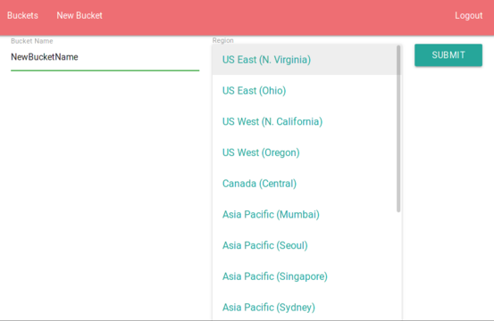

S3Explorer
Table of Contents
1 S3Explorer
A simple and easy AWS S3 bucket explorer. This is very simple and lightweight version in which you are able create, view and delete files and buckets on your server. The application is very simple with responsive design
1.1 Interface
Consist of 4 screens navbar and one button that changes context on different pages:
- Login screen
- just input your key and key ID for your account and you will be forwarded to buckets list page
- Buckets list
- a table with buckets names and their creation date. Clicking on a name will take you to the content of the bucket, while clicking on the trash icon will remove the bucket. NOTE: Bucket can be removed only if it's empty
- Bucket content
- This shows the content of the bucket after you click on bucket name on Bucket list page with option either download file or delete
- New Bucket
- Clicking on "New Bucket" in top nav will take you to bucket creation where you will have the option to chose desired region and give a name for the new bucket

- FAB + (plus)
- on Bucket list and Bucket content pages there is a FAB which creates new bucket or uploads a file respectively.